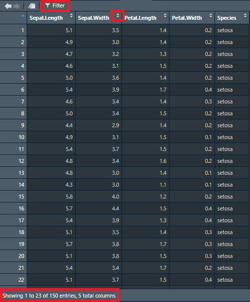

Sepal.Length Sepal.Width Petal.Length Petal.Width Species
1 5.1 3.5 1.4 0.2 setosa
2 4.9 3.0 1.4 0.2 setosa
3 4.7 3.2 1.3 0.2 setosa
4 4.6 3.1 1.5 0.2 setosa
5 5.0 3.6 1.4 0.2 setosa
6 5.4 3.9 1.7 0.4 setosa
7 4.6 3.4 1.4 0.3 setosa
8 5.0 3.4 1.5 0.2 setosa
9 4.4 2.9 1.4 0.2 setosa
10 4.9 3.1 1.5 0.1 setosa
11 5.4 3.7 1.5 0.2 setosa
12 4.8 3.4 1.6 0.2 setosa
13 4.8 3.0 1.4 0.1 setosa
14 4.3 3.0 1.1 0.1 setosa
15 5.8 4.0 1.2 0.2 setosa
16 5.7 4.4 1.5 0.4 setosa
17 5.4 3.9 1.3 0.4 setosa
18 5.1 3.5 1.4 0.3 setosa
19 5.7 3.8 1.7 0.3 setosa
20 5.1 3.8 1.5 0.3 setosa
21 5.4 3.4 1.7 0.2 setosa
22 5.1 3.7 1.5 0.4 setosa
23 4.6 3.6 1.0 0.2 setosa
24 5.1 3.3 1.7 0.5 setosa
25 4.8 3.4 1.9 0.2 setosa
26 5.0 3.0 1.6 0.2 setosa
27 5.0 3.4 1.6 0.4 setosa
28 5.2 3.5 1.5 0.2 setosa
29 5.2 3.4 1.4 0.2 setosa
30 4.7 3.2 1.6 0.2 setosa
31 4.8 3.1 1.6 0.2 setosa
32 5.4 3.4 1.5 0.4 setosa
33 5.2 4.1 1.5 0.1 setosa
34 5.5 4.2 1.4 0.2 setosa
35 4.9 3.1 1.5 0.2 setosa
36 5.0 3.2 1.2 0.2 setosa
37 5.5 3.5 1.3 0.2 setosa
38 4.9 3.6 1.4 0.1 setosa
39 4.4 3.0 1.3 0.2 setosa
40 5.1 3.4 1.5 0.2 setosa
41 5.0 3.5 1.3 0.3 setosa
42 4.5 2.3 1.3 0.3 setosa
43 4.4 3.2 1.3 0.2 setosa
44 5.0 3.5 1.6 0.6 setosa
45 5.1 3.8 1.9 0.4 setosa
46 4.8 3.0 1.4 0.3 setosa
47 5.1 3.8 1.6 0.2 setosa
48 4.6 3.2 1.4 0.2 setosa
49 5.3 3.7 1.5 0.2 setosa
50 5.0 3.3 1.4 0.2 setosa
51 7.0 3.2 4.7 1.4 versicolor
52 6.4 3.2 4.5 1.5 versicolor
53 6.9 3.1 4.9 1.5 versicolor
54 5.5 2.3 4.0 1.3 versicolor
55 6.5 2.8 4.6 1.5 versicolor
56 5.7 2.8 4.5 1.3 versicolor
57 6.3 3.3 4.7 1.6 versicolor
58 4.9 2.4 3.3 1.0 versicolor
59 6.6 2.9 4.6 1.3 versicolor
60 5.2 2.7 3.9 1.4 versicolor
61 5.0 2.0 3.5 1.0 versicolor
62 5.9 3.0 4.2 1.5 versicolor
63 6.0 2.2 4.0 1.0 versicolor
64 6.1 2.9 4.7 1.4 versicolor
65 5.6 2.9 3.6 1.3 versicolor
66 6.7 3.1 4.4 1.4 versicolor
67 5.6 3.0 4.5 1.5 versicolor
68 5.8 2.7 4.1 1.0 versicolor
69 6.2 2.2 4.5 1.5 versicolor
70 5.6 2.5 3.9 1.1 versicolor
71 5.9 3.2 4.8 1.8 versicolor
72 6.1 2.8 4.0 1.3 versicolor
73 6.3 2.5 4.9 1.5 versicolor
74 6.1 2.8 4.7 1.2 versicolor
75 6.4 2.9 4.3 1.3 versicolor
76 6.6 3.0 4.4 1.4 versicolor
77 6.8 2.8 4.8 1.4 versicolor
78 6.7 3.0 5.0 1.7 versicolor
79 6.0 2.9 4.5 1.5 versicolor
80 5.7 2.6 3.5 1.0 versicolor
81 5.5 2.4 3.8 1.1 versicolor
82 5.5 2.4 3.7 1.0 versicolor
83 5.8 2.7 3.9 1.2 versicolor
84 6.0 2.7 5.1 1.6 versicolor
85 5.4 3.0 4.5 1.5 versicolor
86 6.0 3.4 4.5 1.6 versicolor
87 6.7 3.1 4.7 1.5 versicolor
88 6.3 2.3 4.4 1.3 versicolor
89 5.6 3.0 4.1 1.3 versicolor
90 5.5 2.5 4.0 1.3 versicolor
91 5.5 2.6 4.4 1.2 versicolor
92 6.1 3.0 4.6 1.4 versicolor
93 5.8 2.6 4.0 1.2 versicolor
94 5.0 2.3 3.3 1.0 versicolor
95 5.6 2.7 4.2 1.3 versicolor
96 5.7 3.0 4.2 1.2 versicolor
97 5.7 2.9 4.2 1.3 versicolor
98 6.2 2.9 4.3 1.3 versicolor
99 5.1 2.5 3.0 1.1 versicolor
100 5.7 2.8 4.1 1.3 versicolor
101 6.3 3.3 6.0 2.5 virginica
102 5.8 2.7 5.1 1.9 virginica
103 7.1 3.0 5.9 2.1 virginica
104 6.3 2.9 5.6 1.8 virginica
105 6.5 3.0 5.8 2.2 virginica
106 7.6 3.0 6.6 2.1 virginica
107 4.9 2.5 4.5 1.7 virginica
108 7.3 2.9 6.3 1.8 virginica
109 6.7 2.5 5.8 1.8 virginica
110 7.2 3.6 6.1 2.5 virginica
111 6.5 3.2 5.1 2.0 virginica
112 6.4 2.7 5.3 1.9 virginica
113 6.8 3.0 5.5 2.1 virginica
114 5.7 2.5 5.0 2.0 virginica
115 5.8 2.8 5.1 2.4 virginica
116 6.4 3.2 5.3 2.3 virginica
117 6.5 3.0 5.5 1.8 virginica
118 7.7 3.8 6.7 2.2 virginica
119 7.7 2.6 6.9 2.3 virginica
120 6.0 2.2 5.0 1.5 virginica
121 6.9 3.2 5.7 2.3 virginica
122 5.6 2.8 4.9 2.0 virginica
123 7.7 2.8 6.7 2.0 virginica
124 6.3 2.7 4.9 1.8 virginica
125 6.7 3.3 5.7 2.1 virginica
126 7.2 3.2 6.0 1.8 virginica
127 6.2 2.8 4.8 1.8 virginica
128 6.1 3.0 4.9 1.8 virginica
129 6.4 2.8 5.6 2.1 virginica
130 7.2 3.0 5.8 1.6 virginica
131 7.4 2.8 6.1 1.9 virginica
132 7.9 3.8 6.4 2.0 virginica
133 6.4 2.8 5.6 2.2 virginica
134 6.3 2.8 5.1 1.5 virginica
135 6.1 2.6 5.6 1.4 virginica
136 7.7 3.0 6.1 2.3 virginica
137 6.3 3.4 5.6 2.4 virginica
138 6.4 3.1 5.5 1.8 virginica
139 6.0 3.0 4.8 1.8 virginica
140 6.9 3.1 5.4 2.1 virginica
141 6.7 3.1 5.6 2.4 virginica
142 6.9 3.1 5.1 2.3 virginica
143 5.8 2.7 5.1 1.9 virginica
144 6.8 3.2 5.9 2.3 virginica
145 6.7 3.3 5.7 2.5 virginica
146 6.7 3.0 5.2 2.3 virginica
147 6.3 2.5 5.0 1.9 virginica
148 6.5 3.0 5.2 2.0 virginica
149 6.2 3.4 5.4 2.3 virginica
150 5.9 3.0 5.1 1.8 virginicaAccessing and manipulating data
Accessing data
Now that we have seen some basic R operations, such as functions and creating some data, let’s see some ways to access this data and play with it. For this we’ll mainly be working with dataframes and matrices. As an example, we will use the iris dataset, which is loaded into R by default. You can view the data just by running iris in your console:
Although this is fine for small datasets, and seems okay for the iris datset, data will easily be too large to properly display in the console. In that case, we can choose to see only the beginning or the end of the data, using the head() and tail() functions. With these functions, you can specify the number of rows in a certain dataset that you want to see. For example, to see the first 4 and the last 5 rows of the iris dataset, we can do the following:
Sepal.Length Sepal.Width Petal.Length Petal.Width Species
1 5.1 3.5 1.4 0.2 setosa
2 4.9 3.0 1.4 0.2 setosa
3 4.7 3.2 1.3 0.2 setosa
4 4.6 3.1 1.5 0.2 setosa Sepal.Length Sepal.Width Petal.Length Petal.Width Species
146 6.7 3.0 5.2 2.3 virginica
147 6.3 2.5 5.0 1.9 virginica
148 6.5 3.0 5.2 2.0 virginica
149 6.2 3.4 5.4 2.3 virginica
150 5.9 3.0 5.1 1.8 virginicaThis is already much clearer. Nonetheless, we might want to see the whole data, for example to quickly look for inconsistencies. You can do this just by clicking on the name of the data in your global environment, or by using the view() function:
When we use view() or open data from the global environment, RStudio offers as some quick tools to get a better overview of our data. After opening the data, you will see something similar to Figure 1, where you can see some areas of interest demarcated.

We can now scroll through the data and see all columns. If you wonder how many rows and columns you have, you can see this at the bottom of the window. The viewer will only show 50 columns at a time, but you can click through the columns if you have more than 50. If you want to see only entries that meet a certain condition, you can press the filter button at the top of the viewer to filter certain values. Lastly, you can sort a column as ascending or descending by clicking on the little arrows to the right of the column name. Note that any operation you perform on the data in the viewer (sorting, filtering), does not affect the actual data, only the data you see. In other words, you only manipulate what you see in the data, not the data itself.
Comparing values
Before we see how to access the data, let’s take a sidestep to see how we can compare values in R. To compare values and get returned TRUE or FALSE (called Booleans) there are some important operators:
>: Greater than; is the value before the operator greater than the value after the operator.<: Smaller than; is the value before the operator smaller than the value after the operator.>=: Greater than or equal to; is the value before the operator greater than or equal to the value after the operator.<=: Smaller than or equal to; is the value before the operator smaller than or equal to the value after the operator.==: Equal; is the value before the operator equal to the value after the operator.!=: Not equal; is the value before the operator not equal to the value after the operator.
Let’s see some examples of using these operators:
Boolean operators
Now that we can compare values and get returned TRUE or FALSE, we can also make multiple comparisons using Boolean operators (also know as logical operators). If the conditions specified match, these will return TRUE, otherwise FALSE.
|: OR; the value before or after the operator should beTRUE.&: AND; the values before and after the operator should beTRUE.!: NOT; the match should not beTRUE.
Using them works as follows:
Accessing the data
Back to accessing the data! We now have a data frame with data inside, loaded in our environment. However, how can we actually access that data? For that, we can ‘subset’ the data. There is three ways we can do that:
Dollar operator: $
The dollar operator, $, allows you to quickly subset a column from the data. This is a good way to have a quick look in your data. For example, if we want to subset the column Sepal.Length, we can simply do the following:
[1] 5.1 4.9 4.7 4.6 5.0 5.4 4.6 5.0 4.4 4.9 5.4 4.8 4.8 4.3 5.8 5.7 5.4 5.1
[19] 5.7 5.1 5.4 5.1 4.6 5.1 4.8 5.0 5.0 5.2 5.2 4.7 4.8 5.4 5.2 5.5 4.9 5.0
[37] 5.5 4.9 4.4 5.1 5.0 4.5 4.4 5.0 5.1 4.8 5.1 4.6 5.3 5.0 7.0 6.4 6.9 5.5
[55] 6.5 5.7 6.3 4.9 6.6 5.2 5.0 5.9 6.0 6.1 5.6 6.7 5.6 5.8 6.2 5.6 5.9 6.1
[73] 6.3 6.1 6.4 6.6 6.8 6.7 6.0 5.7 5.5 5.5 5.8 6.0 5.4 6.0 6.7 6.3 5.6 5.5
[91] 5.5 6.1 5.8 5.0 5.6 5.7 5.7 6.2 5.1 5.7 6.3 5.8 7.1 6.3 6.5 7.6 4.9 7.3
[109] 6.7 7.2 6.5 6.4 6.8 5.7 5.8 6.4 6.5 7.7 7.7 6.0 6.9 5.6 7.7 6.3 6.7 7.2
[127] 6.2 6.1 6.4 7.2 7.4 7.9 6.4 6.3 6.1 7.7 6.3 6.4 6.0 6.9 6.7 6.9 5.8 6.8
[145] 6.7 6.7 6.3 6.5 6.2 5.9As you can see, this returns a vector with the values.
Single brackets: []
Imagine we want a specific row, a specific column, or even a specific cell from our data. In that case, $ is insufficient. Luckily, we can use single brackets: []. When using single brackets on a data frame, we can put two things in-between the brackets: the row-number we are interested in and the column we are interested in. These can be both index numbers and row/column names. If we want to select all rows or all columns, we can leave that argument empty. Let’s see some examples:
[1] 0.1 [1] 3.5 3.0 3.2 3.1 3.6 3.9 3.4 3.4 2.9 3.1 3.7 3.4 3.0 3.0 4.0 4.4 3.9 3.5
[19] 3.8 3.8 3.4 3.7 3.6 3.3 3.4 3.0 3.4 3.5 3.4 3.2 3.1 3.4 4.1 4.2 3.1 3.2
[37] 3.5 3.6 3.0 3.4 3.5 2.3 3.2 3.5 3.8 3.0 3.8 3.2 3.7 3.3 3.2 3.2 3.1 2.3
[55] 2.8 2.8 3.3 2.4 2.9 2.7 2.0 3.0 2.2 2.9 2.9 3.1 3.0 2.7 2.2 2.5 3.2 2.8
[73] 2.5 2.8 2.9 3.0 2.8 3.0 2.9 2.6 2.4 2.4 2.7 2.7 3.0 3.4 3.1 2.3 3.0 2.5
[91] 2.6 3.0 2.6 2.3 2.7 3.0 2.9 2.9 2.5 2.8 3.3 2.7 3.0 2.9 3.0 3.0 2.5 2.9
[109] 2.5 3.6 3.2 2.7 3.0 2.5 2.8 3.2 3.0 3.8 2.6 2.2 3.2 2.8 2.8 2.7 3.3 3.2
[127] 2.8 3.0 2.8 3.0 2.8 3.8 2.8 2.8 2.6 3.0 3.4 3.1 3.0 3.1 3.1 3.1 2.7 3.2
[145] 3.3 3.0 2.5 3.0 3.4 3.0[1] 0.2
Meow?
While writing this tutorial, my cat walked on my keyboard and decided she wanted to add the following:
ckxcccccccccccccccccccccccccccccccccccccc[[[[[[[[‘xcccccccccccccccccccccccccccccccccccccccccccccccccccccccccccccccccccccccccccccccccccccccccccccccccccccccccccccccccccccccccccccccccccccccccccccccccccccccccccccc.9¿’]]]]]]]]
Now we can go even further with our brackets. When we subset our data frame once, we get a vector of values. Imagine we want to subset the 4th value of the column Sepal.Width, we can simply do:
However, our fun doesn’t stop here! What if we didn’t want the 4th value, but all values larger than 3.0? Easy; let’s see how it works:
[1] 3.5 3.0 3.2 3.1 3.6 3.9 3.4 3.4 2.9 3.1 3.7 3.4 3.0 3.0 4.0 4.4 3.9 3.5
[19] 3.8 3.8 3.4 3.7 3.6 3.3 3.4 3.0 3.4 3.5 3.4 3.2 3.1 3.4 4.1 4.2 3.1 3.2
[37] 3.5 3.6 3.0 3.4 3.5 2.3 3.2 3.5 3.8 3.0 3.8 3.2 3.7 3.3 3.2 3.2 3.1 2.3
[55] 2.8 2.8 3.3 2.4 2.9 2.7 2.0 3.0 2.2 2.9 2.9 3.1 3.0 2.7 2.2 2.5 3.2 2.8
[73] 2.5 2.8 2.9 3.0 2.8 3.0 2.9 2.6 2.4 2.4 2.7 2.7 3.0 3.4 3.1 2.3 3.0 2.5
[91] 2.6 3.0 2.6 2.3 2.7 3.0 2.9 2.9 2.5 2.8 3.3 2.7 3.0 2.9 3.0 3.0 2.5 2.9
[109] 2.5 3.6 3.2 2.7 3.0 2.5 2.8 3.2 3.0 3.8 2.6 2.2 3.2 2.8 2.8 2.7 3.3 3.2
[127] 2.8 3.0 2.8 3.0 2.8 3.8 2.8 2.8 2.6 3.0 3.4 3.1 3.0 3.1 3.1 3.1 2.7 3.2
[145] 3.3 3.0 2.5 3.0 3.4 3.0# From this vector, we can get per value a Boolean (TRUE or FALSE) whether it is >3.0
iris[, "Sepal.Width"] > 3 [1] TRUE FALSE TRUE TRUE TRUE TRUE TRUE TRUE FALSE TRUE TRUE TRUE
[13] FALSE FALSE TRUE TRUE TRUE TRUE TRUE TRUE TRUE TRUE TRUE TRUE
[25] TRUE FALSE TRUE TRUE TRUE TRUE TRUE TRUE TRUE TRUE TRUE TRUE
[37] TRUE TRUE FALSE TRUE TRUE FALSE TRUE TRUE TRUE FALSE TRUE TRUE
[49] TRUE TRUE TRUE TRUE TRUE FALSE FALSE FALSE TRUE FALSE FALSE FALSE
[61] FALSE FALSE FALSE FALSE FALSE TRUE FALSE FALSE FALSE FALSE TRUE FALSE
[73] FALSE FALSE FALSE FALSE FALSE FALSE FALSE FALSE FALSE FALSE FALSE FALSE
[85] FALSE TRUE TRUE FALSE FALSE FALSE FALSE FALSE FALSE FALSE FALSE FALSE
[97] FALSE FALSE FALSE FALSE TRUE FALSE FALSE FALSE FALSE FALSE FALSE FALSE
[109] FALSE TRUE TRUE FALSE FALSE FALSE FALSE TRUE FALSE TRUE FALSE FALSE
[121] TRUE FALSE FALSE FALSE TRUE TRUE FALSE FALSE FALSE FALSE FALSE TRUE
[133] FALSE FALSE FALSE FALSE TRUE TRUE FALSE TRUE TRUE TRUE FALSE TRUE
[145] TRUE FALSE FALSE FALSE TRUE FALSE# We can use these Booleans to subset the column to only keep values >3.0
iris[, "Sepal.Width"][iris["Sepal.Width"] > 3] [1] 3.5 3.2 3.1 3.6 3.9 3.4 3.4 3.1 3.7 3.4 4.0 4.4 3.9 3.5 3.8 3.8 3.4 3.7 3.6
[20] 3.3 3.4 3.4 3.5 3.4 3.2 3.1 3.4 4.1 4.2 3.1 3.2 3.5 3.6 3.4 3.5 3.2 3.5 3.8
[39] 3.8 3.2 3.7 3.3 3.2 3.2 3.1 3.3 3.1 3.2 3.4 3.1 3.3 3.6 3.2 3.2 3.8 3.2 3.3
[58] 3.2 3.8 3.4 3.1 3.1 3.1 3.1 3.2 3.3 3.4## To make it more readable, we could of course store the Booleans in their own vector which we use to subset
# Create vector with Booleans
larger_than_3 <- iris[, "Sepal.Width"] > 3
# Subset Sepal.Width
iris[, "Sepal.Width"][larger_than_3] [1] 3.5 3.2 3.1 3.6 3.9 3.4 3.4 3.1 3.7 3.4 4.0 4.4 3.9 3.5 3.8 3.8 3.4 3.7 3.6
[20] 3.3 3.4 3.4 3.5 3.4 3.2 3.1 3.4 4.1 4.2 3.1 3.2 3.5 3.6 3.4 3.5 3.2 3.5 3.8
[39] 3.8 3.2 3.7 3.3 3.2 3.2 3.1 3.3 3.1 3.2 3.4 3.1 3.3 3.6 3.2 3.2 3.8 3.2 3.3
[58] 3.2 3.8 3.4 3.1 3.1 3.1 3.1 3.2 3.3 3.4Double brackets: [[]]
Instead of single brackets, we can also use double brackets. So what is the difference? First of all, we can supply only one argument to [[]]. In the case of a data frame, this means we cannot subset certain rows, but we can still subset columns. In a vector, we can use [[]] as seen before. So what is the difference between single brackets ([]) and double brackets ([[]])?
In vectors and matrices, using double brackets instead of single brackets will drop any attributes and names attached to the data (such as column labels). To subset on a list, double brackets can be used for single values/elements while single brackets return a list of the elements. You may notice that the difference is not big, but it is still good to have heard about it once. More can be found here.
Although the $ operator is a quick way to access some data, it is recommended to not use it in the actual scripts you write. You can use $ to check out some data in the console or have quickly check something, but in your script you should use [] or [[]]. This allows you to easily transform code into your own functions (which we will see later). Additionally, dollar operators do not allow logicals, while brackets do.
Which
What if we wanted to know not the exact values greater than 3, but the row numbers in the data set? In that case, we could use which():
[1] 1 3 4 5 6 7 8 10 11 12 15 16 17 18 19 20 21 22 23
[20] 24 25 27 28 29 30 31 32 33 34 35 36 37 38 40 41 43 44 45
[39] 47 48 49 50 51 52 53 57 66 71 86 87 101 110 111 116 118 121 125
[58] 126 132 137 138 140 141 142 144 145 149We now have the line numbers with which (pun intended) we can subset those values:
[1] 3.5 3.2 3.1 3.6 3.9 3.4 3.4 3.1 3.7 3.4 4.0 4.4 3.9 3.5 3.8 3.8 3.4 3.7 3.6
[20] 3.3 3.4 3.4 3.5 3.4 3.2 3.1 3.4 4.1 4.2 3.1 3.2 3.5 3.6 3.4 3.5 3.2 3.5 3.8
[39] 3.8 3.2 3.7 3.3 3.2 3.2 3.1 3.3 3.1 3.2 3.4 3.1 3.3 3.6 3.2 3.2 3.8 3.2 3.3
[58] 3.2 3.8 3.4 3.1 3.1 3.1 3.1 3.2 3.3 3.4We can even use our Boolean operators to show that using which() gives the same results as we saw before when not using which():
iris[which(iris[, "Sepal.Width"] > 3), "Sepal.Width"] == iris[, "Sepal.Width"][iris["Sepal.Width"] > 3] [1] TRUE TRUE TRUE TRUE TRUE TRUE TRUE TRUE TRUE TRUE TRUE TRUE TRUE TRUE TRUE
[16] TRUE TRUE TRUE TRUE TRUE TRUE TRUE TRUE TRUE TRUE TRUE TRUE TRUE TRUE TRUE
[31] TRUE TRUE TRUE TRUE TRUE TRUE TRUE TRUE TRUE TRUE TRUE TRUE TRUE TRUE TRUE
[46] TRUE TRUE TRUE TRUE TRUE TRUE TRUE TRUE TRUE TRUE TRUE TRUE TRUE TRUE TRUE
[61] TRUE TRUE TRUE TRUE TRUE TRUE TRUEThe main advantage of which() is that it might be more readable in your code.
Mutating data
It is great to be able to subset specific data from our data frames, but it is much more fun to do some statistics with it! A great thing about the subsetted columns of data is that you can easily perform calculations on them.
For example, to multiply all values in in the column Sepal.Width by 3, we can simply do:
[1] 10.5 9.0 9.6 9.3 10.8 11.7 10.2 10.2 8.7 9.3 11.1 10.2 9.0 9.0 12.0
[16] 13.2 11.7 10.5 11.4 11.4 10.2 11.1 10.8 9.9 10.2 9.0 10.2 10.5 10.2 9.6
[31] 9.3 10.2 12.3 12.6 9.3 9.6 10.5 10.8 9.0 10.2 10.5 6.9 9.6 10.5 11.4
[46] 9.0 11.4 9.6 11.1 9.9 9.6 9.6 9.3 6.9 8.4 8.4 9.9 7.2 8.7 8.1
[61] 6.0 9.0 6.6 8.7 8.7 9.3 9.0 8.1 6.6 7.5 9.6 8.4 7.5 8.4 8.7
[76] 9.0 8.4 9.0 8.7 7.8 7.2 7.2 8.1 8.1 9.0 10.2 9.3 6.9 9.0 7.5
[91] 7.8 9.0 7.8 6.9 8.1 9.0 8.7 8.7 7.5 8.4 9.9 8.1 9.0 8.7 9.0
[106] 9.0 7.5 8.7 7.5 10.8 9.6 8.1 9.0 7.5 8.4 9.6 9.0 11.4 7.8 6.6
[121] 9.6 8.4 8.4 8.1 9.9 9.6 8.4 9.0 8.4 9.0 8.4 11.4 8.4 8.4 7.8
[136] 9.0 10.2 9.3 9.0 9.3 9.3 9.3 8.1 9.6 9.9 9.0 7.5 9.0 10.2 9.0We can also multiply all values by a value specific to them. For exapmle. to multiply Sepal.Width by Sepal.Length, we could run:
[1] 17.85 14.70 15.04 14.26 18.00 21.06 15.64 17.00 12.76 15.19 19.98 16.32
[13] 14.40 12.90 23.20 25.08 21.06 17.85 21.66 19.38 18.36 18.87 16.56 16.83
[25] 16.32 15.00 17.00 18.20 17.68 15.04 14.88 18.36 21.32 23.10 15.19 16.00
[37] 19.25 17.64 13.20 17.34 17.50 10.35 14.08 17.50 19.38 14.40 19.38 14.72
[49] 19.61 16.50 22.40 20.48 21.39 12.65 18.20 15.96 20.79 11.76 19.14 14.04
[61] 10.00 17.70 13.20 17.69 16.24 20.77 16.80 15.66 13.64 14.00 18.88 17.08
[73] 15.75 17.08 18.56 19.80 19.04 20.10 17.40 14.82 13.20 13.20 15.66 16.20
[85] 16.20 20.40 20.77 14.49 16.80 13.75 14.30 18.30 15.08 11.50 15.12 17.10
[97] 16.53 17.98 12.75 15.96 20.79 15.66 21.30 18.27 19.50 22.80 12.25 21.17
[109] 16.75 25.92 20.80 17.28 20.40 14.25 16.24 20.48 19.50 29.26 20.02 13.20
[121] 22.08 15.68 21.56 17.01 22.11 23.04 17.36 18.30 17.92 21.60 20.72 30.02
[133] 17.92 17.64 15.86 23.10 21.42 19.84 18.00 21.39 20.77 21.39 15.66 21.76
[145] 22.11 20.10 15.75 19.50 21.08 17.70It is important to realize that if you are calculating with columns, each mutating value has to be of the same length as the column, or of length 1. If the mutating value is of the same length as the column (e.g., another column), each row in one column is mutated with the row in the other column. If the mutating value is of length 1 (e.g., the number 3), all rows in one column are mutated by the same value.
You can also perform functions on subsetted data:
Get and assign
The last important thing we should discuss about acessing the data are the functions get() and assign(). Although we can easily assign new data while writing our code (data <- iris), at a certain point we might want to automate it (and later on we will see how to do that). In that case, the name of the data we want might vary. When a value might vary, such as a column, it is often possible to use strings, such as "iris". However, for assigning data, this does not work:
We just assigned the string "iris", instead of the data iris. In this case, assign() allows us to achieve our objective:
Sepal.Length Sepal.Width Petal.Length Petal.Width Species
1 5.1 3.5 1.4 0.2 setosa
2 4.9 3.0 1.4 0.2 setosa
3 4.7 3.2 1.3 0.2 setosa
4 4.6 3.1 1.5 0.2 setosa
5 5.0 3.6 1.4 0.2 setosaIn the same way, if we want to flexibly get data from the global environment, we can use get():
Value types
The last thing to discuss for now are value types. A few times we talked about strings, which is a specific type a value can have in R. The most important value types to know for now are:
- numeric: a real number, for example 1.42, 8.42, and -5.0.
- integer: an integer, for exapmle 4, -3, and 7. In R, an integer is made explicit with
L, for example:10L. - date: a date, such as 2000-02-09, 2000-02-29, and 1912-06-23. Dates are stored behind the scene as an integer showing the distance from a set date. In R, this date is generally 1970-01-01, also known as the origin. Dates in R are generally written in the format yyyy-mm-dd.
- string: a text, for example “hello”, “4”, or “==”. Strings are always enclosed with single or double quotation marks (’, “).
- logical: a Boolean;
TRUEorFALSE.
To check the type of a value, we can use class():
Additionally, we can transform values into different types, using certain functions:
as.numeric(): transform value to numeric.as.integer(): transform value to integer.as.character(): transform value to stringas.Date(): transform value to date. This function often needs an origin supplied. Note that Date is written with a capital D.
Here are some examples:
Exercises
1. Store new data
Besides the dataset iris, another available dataset in R is mtcars. Load this data into a new data frame called data using assign().
2. Subset column
Now subset the column disp and store this in a variable called var.
3. Keep certain values
From the variable var, keep only values greater than 110.5 and store this in a variable called var_new.
4. Mutate variables
Now divided all values in var_new by 10 and store this in a variable called var_div.
5. Change values to character
Now change the values in the variable var_div to character values and store these in a variable called var_char.
6. Check character type
Make sure the first value in the variable var_char is not of the type numeric (called "numeric").
Next topic
We now know how we can access our data and manipulate it. Next up, we will learn about packages, which allows us to do so much more with our data then we have seen until now.
Next: Packages